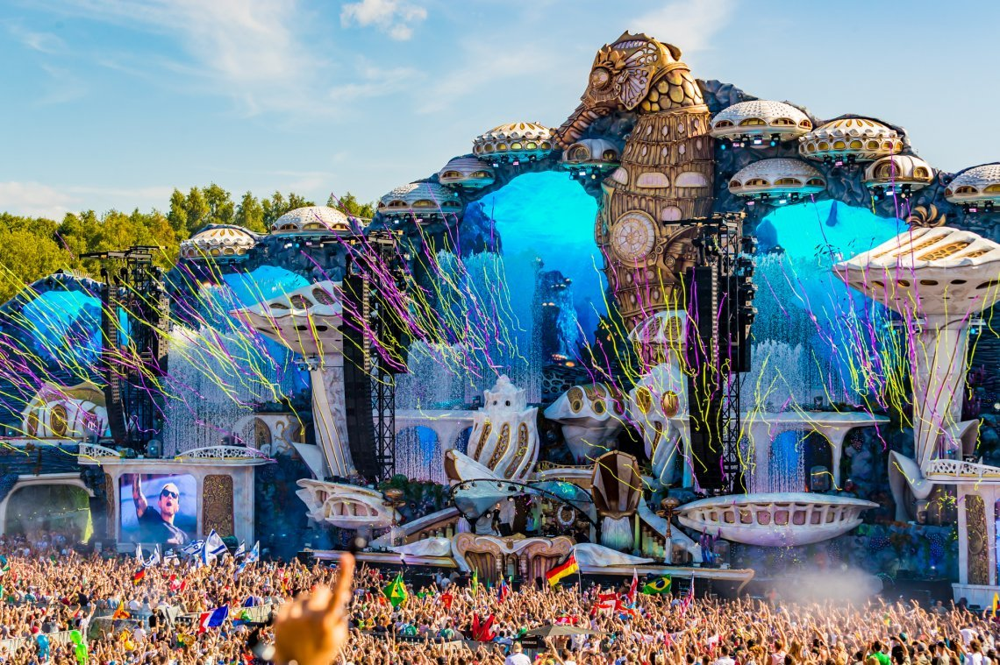

Ti trovi in Home
Tomorrowland sbarca al corso di Tecnologie Web
Tomorrowland è un festival di musica FDM che si svolge a Boom, Belgio. Il festival è nato nel lontano 2005, ed è diventato negli ultimi anni uno dei festival più importanti al mondo. Le ultime edizioni hanno visto la programmazione in due weekend distinti alla fine di luglio, con un'affluenza totale di circa 400.000 persone, e biglietti venduti nel giro di pochi minuti.